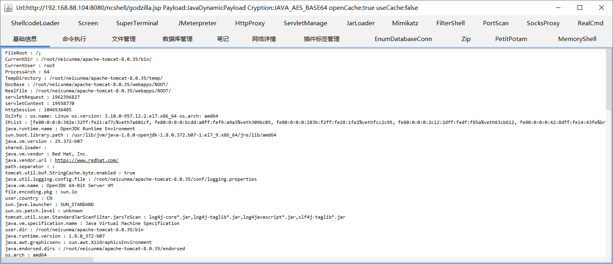
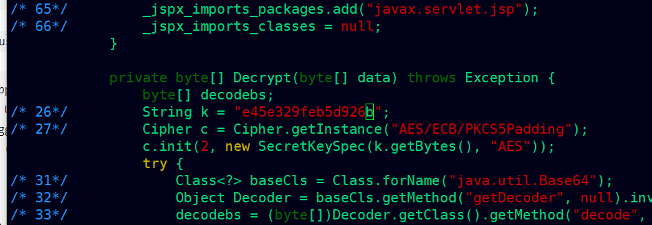

浅谈冰蝎、哥斯拉内存马排查思路
前言
最近有师傅问到遇到被内存马注入了，应该怎么排查，特别是常见是冰蝎和哥斯拉的内存马。刚好有空这两天在本地分析了一下内存马的排查思路，以及怎么查杀清除内存马
环境
Centos ：release 7.6.1810 (Core)
Tomcat：v8.0.35 https://archive.apache.org/dist/tomcat/tomcat-8/v8.0.35/bin/apache-tomcat-8.0.35.tar.gz
Behinder：v4.0.6 https://github.com/rebeyond/Behinder
godzilla_v4.0.1 https://github.com/BeichenDream/Godzilla
arthas 3.7.0 https://github.com/alibaba/arthas （Alibaba Java诊断利器Arthas）
shell-analyzer 0.1 https://github.com/4ra1n/shell-analyzer （基于 Java Agent 的内存马查杀 GUI 工具）
在centos7上部署Tomcat
1 | https://archive.apache.org/dist/tomcat/tomcat-8/v8.0.35/bin/apache-tomcat-8.0.35.tar.gz |
解压
1 | tar -zxvf apache-tomcat-8.0.35.tar.gz |
Behinder的webshell
我们生成服务端之后直接上传到tomcat的apache-tomcat-8.0.35/webapps/ROOT/ncshell目录中。(我自己创建了个目录ncshell)
使用客户端连接：http://192.168.88.104:8080/ncshell/bxdefault_aes.jsp
arthas的使用
1 | 下载：wget https://github.com/alibaba/arthas/releases/download/arthas-all-3.7.0/arthas-bin.zip；unzip |
发现报错了。CentOS 自带openjdk不支持jps、jstack等命令。
就算指定pid运行也会报错没有找到tools.jar；
我直接通过yum升级安装一下解决
1 | yum install java-1.8.0-openjdk-devel.x86_64 |
再次启动arthas-boot.jar；成功
查看一下内存中mbean信息
1 | mbean | grep "name=/" |
Arthas 常用命令
1 | dashboard：显示当前应用程序的实时运行状况，包括 CPU 使用率、内存使用情况、线程情况等 |
Behinder内存马排查思路
注入之前，先查看一下加载器的信息和servlet的信息（因为冰蝎注入的是servlet类型的内存马）
此时已经发现了一个可疑的类，这个是实体的webshell，也就是我们上传到tomcat目录的那个：org.apache.jsp.ncshell.bxdefault_005faes_jsp
使用jad查看一下
1 | jad org.apache.jsp.ncshell.bxdefault_005faes_jsp |
得知org.apache.jsp.ncshell.bxdefault_005faes_jsp很明显的是webshell
为什么也要看一下javax.servlet.http.HttpServlet这个类呢，因为冰蝎的内存马是注入到这个类里面的；此时查看发现暂未发现异常。
注入内存马；把防检测也勾选上。
注入成功，且成功连接内存马
我们再来看一下加载器的信息和servlet的信息；发现多了一个可疑的加载器。
jad查看后发现是使用 super.defineClass 方法将字节数组转换为一个 Class 对象进行定义和加载
我们再去查看一下javax.servlet.http.HttpServlet；此时我们发现在它的service方法中，已经被注入了 内存马。
1 | jad javax.servlet.http.HttpServlet |
那么很确定了这个就是内存马，下面我们来那它关闭或者破坏掉，使其失效。
Behinder内存马清除
找了一圈发现，arthas并没有直接关闭指定类的功能。但是可以使用arthas进行热更新代码；但是我使用它做编译的时候失败了，后来学习了一下Javaagent技术，可以对jvm内的运行时类操作，于是可以编写一个agent使用retransformClass字节码重定义技术重新定义这个类。
项目的代码我已上传到github：
1 | https://github.com/Garck3h/killBehinderMemShell |
直接使用工具重置javax.servlet.http.HttpServlet类
1 | java -Xbootclasspath/a:/usr/lib/jvm/java-1.8.0-openjdk-1.8.0.372.b07-1.el7_9.x86_64/lib/tools.jar -jar killBehinderMemShell-1.0-jar-with-dependencies.jar 61259 javax.servlet.http.HttpServlet |

heapdump的使用
首先导出当前内存快照
然后使用string查看post请求的记录；发现可疑的请求目录
1 | strings /root/neicunma/apache-tomcat-8.0.35/temp/heapdump2023-08-16-23-286100384348377803151.hprof | grep "POST /" |
查看可疑路径；无果
1 | strings /root/neicunma/apache-tomcat-8.0.35/temp/heapdump2023-08-16-23-286100384348377803151.hprof | grep -E "/webapps/.*?\!" | sort -u |
至此冰蝎内存马的排查已完毕。
godzilla内存马
生成哥斯拉webshell上传至tomcat，进行连接。

哥斯拉工具中有FilterShell和memoryShell两种内存马
FilterShell
注入Filter类型的内存马
看一下当前的过滤器；有两个过滤器监听着所有的访问路径
使用arthas分析；查看所有的Filter；看到了一个可疑的Filter：org.apache.coyote.jsonFormatVisitors.JsonFormatTypes
1 | sc *.Filter |
使用jad查看源码，分析得知
1 | jad org.apache.coyote.jsonFormatVisitors.JsonFormatTypes |
继承了加载器和过滤器的接口；同时定义了一些敏感的属性
可以看到，这里监听了全部的uri路径”/*“。代码的大致功能为添加一个过滤器，并将过滤器配置和过滤器映射添加到标准上下文中，然后对过滤器进行排序，确保把它放在最高的优先级。
剩下的就是一个处理请求的和一些编码的函数了。
MemoryShell
我们重点来分析一下MemoryShell；该功能不仅可以注入哥斯拉的shell，还可以注入冰蝎、菜刀甚至ReGeorg。我们注入一个哥斯拉的内存马。
连接成功
查看jvm中的servlet的情况；多了一个可疑的类：org.apache.coyote.ser.impl.TypeWrappedSerializer
jad分析可疑的Servlet类：org.apache.coyote.ser.impl.TypeWrappedSerializer；该类实现了一个包装器，大致是用于在Servlet上下文中添加Servlet。其中transform 方法用于对传入的 standardContext 对象进行一系列的处理；x 方法是一个AES的加解密方法；还有md5方法；最后还使用了noLog 方法禁止日志记录。
同时查看内存中的请求url；也可以发现可疑的情况
1 | mbean | grep "name=/" |
哥斯拉内存马查杀一
github地址：https://github.com/c0ny1/java-memshell-scanner
直接把jsp上传到tomcat下，访问解析会自动查找疑似的内存马，可dump class文件下来分析，也可直接kill掉该类。
这时候发现了servlet类型的内存马。直接kill掉。
kill掉之后，业务还可正常访问，但内存马已经失效。
哥斯拉内存马查杀二
github：https://github.com/4ra1n/shell-analyzer
使用jps查看进程
启动服务端
1 | java -cp remote-0.1.jar:/usr/lib/jvm/java-1.8.0-openjdk-1.8.0.372.b07-1.el7_9.x86_64/lib/tools.jar com.n1ar4.RemoteLoader 76589 adminasd |
启动gui客户端
1 | java -jar gui-0.1.jar |
输入token（上面设置的密码）和IP之后点击attach即可。双击显示的类可以反编译代码
直接删除内存马
jdk自带的sa-jdi
sa-jdi是JDK提供的一个强大的调试工具集，适用于语言层和虚拟机层，支持调试运行着的Java进程、core文件和虚拟机crash之后的dump文件。在没有其它工具的情况下，也可以勉强凑合着使用它进行简单的分析。
运行
1 | java -cp /usr/lib/jvm/java-1.8.0-openjdk-1.8.0.372.b07-1.el7_9.x86_64/lib/sa-jdi.jar sun.jvm.hotspot.HSDB |
输入jps查看到Bootstrap的pid
可以直接查看正在jvm中运行的类，以及反编译查看源码内容
总结
本文主要简单分析了冰蝎和哥斯拉常见的内存马，其中冰蝎的内存马是agent类型的，使用常规的杀软工具未必可以扫描杀除，我写了个小工具根据分析得知的恶意类之后，进行重置。对于普通的Filter和servlet类型的内存马可以使用上述的jsp查杀工具或者gui工具进行查杀。当然感兴趣的师傅也可以使用arthas热更新代码功能尝试去破坏掉恶意类。后续若有空，我也继续完善一下内存马清除工具。
arthas热更新破坏godzilla内存马（失败）
jad反编译的结果保存在 /tmp/bxdefault_005faes_jsp.java文件里
1 | jad --source-only org.apache.coyote.ser.impl.TypeWrappedSerializer > /tmp/TypeWrappedSerializer.java |
在新窗口使用vim修改内存马的密码（在Decrypt方法内），或者进行其它操作都可以；然后保存。

回到arthas。使用sc查找加载.bxdefault_005faes_jsp的ClassLoader
1 | sc -d org.apache.coyote.ser.impl.TypeWrappedSerializer | grep classLoaderHash |
使用mc命令编译
1 | mc -c 42f71ecb /tmp/TypeWrappedSerializer.java -d /tmp |
使用redefine命令重新加载新编译好的bxdefault_005faes_jsp.class
1 | redefine /tmp/org/apache/jsp/ncshell/bxdefault_005faes_jsp.class /tmp/org/apache/jsp/ncshell/bxdefault_005faes_jsp$U.class |